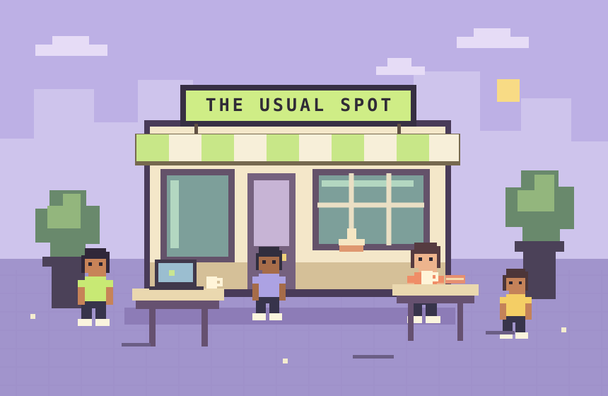

Join the party.
Join our WhatsApp Community. Meetup announcements land in the announcements channel.
A little coffee. A few curious people.
A plan that actually makes it out of the group chat.
Your next good evening starts with “I’m in.”

anyone up for coffee?on my way!Sometimes we build. Sometimes we read. Sometimes a quick coffee turns into a conversation that lasts for hours. There’s room for all of it.
Choose your side quest.
There’s no wrong answer.
Join our WhatsApp Community. Meetup announcements land in the announcements channel.
Sunny shares a time and place, often at short notice and after work. Nearby and interested? That’s your cue.
Check the announcement: some gatherings are open to everyone interested; others have limited space and need an RSVP.
No meetup near you right now? Stay in the community. The next plan might be.
Because last-minute plans have a funny way of actually happening.
Unlike that Goa trip you’ve been planning with your friends forever. ;)
Hey, I’m Sunny. I started Impromptu to bring people together—to work on something, learn from each other, or simply enjoy good company.
I share a plan when there’s an opportunity to meet. The people who show up make each gathering their own.
See you at the next one,Join the community. Come along when a meetup happens near you.
We’ll save you a little room at the table.